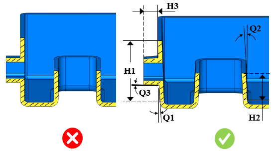

抜き勾配は、引き抜き方向に対してパーツ壁の内側および外側に付与する必要があります。
抜き勾配の設計は、プラスチックパーツを設計する際の重要な要素です。こうしたパーツはコアに収縮して張り付きやすい傾向があります。その結果、コア表面における接触圧力が高まり、コアとパーツの間の摩擦が増加して、金型からパーツを排出することが困難になります。したがって、パーツの排出を補助するために、抜き勾配は適切に設計する必要があります。また、サイクルタイムを短縮し、生産性を向上させます。抜き勾配は、引き抜き方向に沿ってパーツの内壁または外壁に使用する必要があります。
一般に、コアおよびキャビティを設計する際には、面ごとに抜き勾配を変化させる必要があります。そのため、金型からパーツを容易に取り外せるように、適切な抜き勾配を付与する必要があります。深い部位、複雑な形状、内側コアまたはダイ部位では、パーツが周囲に収縮する傾向があるため、より大きな抜き勾配を使用する必要があります。
一般的なガイドラインでは、内側壁および外側壁の両方に対して、片側あたり0.5°～2°の角度が推奨されます。
DFMProは、与えられた引き抜き方向に基づいて、コア、キャビティ、およびサイドコア上の抜き勾配を特定します。これらの抜き勾配は、面の高さに対して構成された値と照合して検証されます。
ユーザーはデフォルトの構成値を編集できます。

ここで、
H1 = キャビティ面の高さ
H2 = コア面の高さ
H3 = サイドコア面の高さ
Q1 = キャビティの抜き勾配
Q2 = コアの抜き勾配
Q3 = サイドコアの抜き勾配
ユーザーは、Importボタンを使用して、Excelシートテンプレート内にある一括データをインポートできます。
標準テンプレート形式:
H1 |
H2 |
Q1 |
Q2 |
Q3 |
0 |
2 |
1.91 |
1.43 |
3.0 |
2 |
4 |
1.43 |
1.14 |
0.3 |
4 |
|
1.14 |
0.95 |
0.3 |
ここでは、
H1 = 面の高さ = 最小（超過）
H2 = 面の高さ = 最大（以下、または包含）